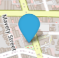

Map Information |
|||
| One icon represents a methane enhancement (high level of methane) reported in that spot. The severity of the smell is represented by the colour of the icon. Clicking on each icon will tell you when the enhancement was reported and how the user noticed it. | |||
|  | |||
| No smell | Mild smell | Moderate smell | Severe smell |
| A dark purple icon represents a known source of methane emissions. Clicking on each icon will tell you the name of the source and the type of emitter it is. | |||